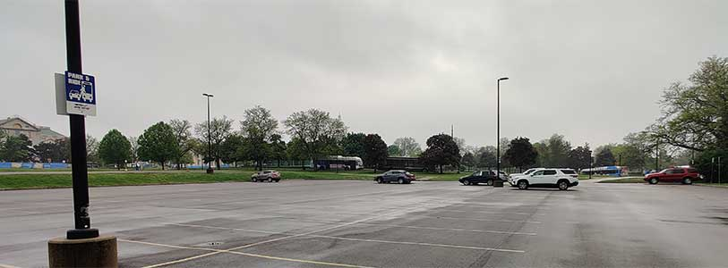
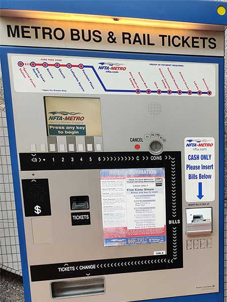
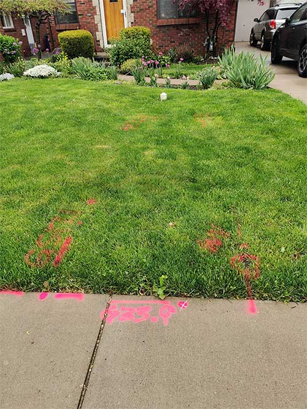
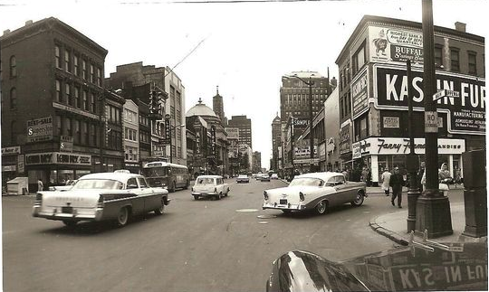
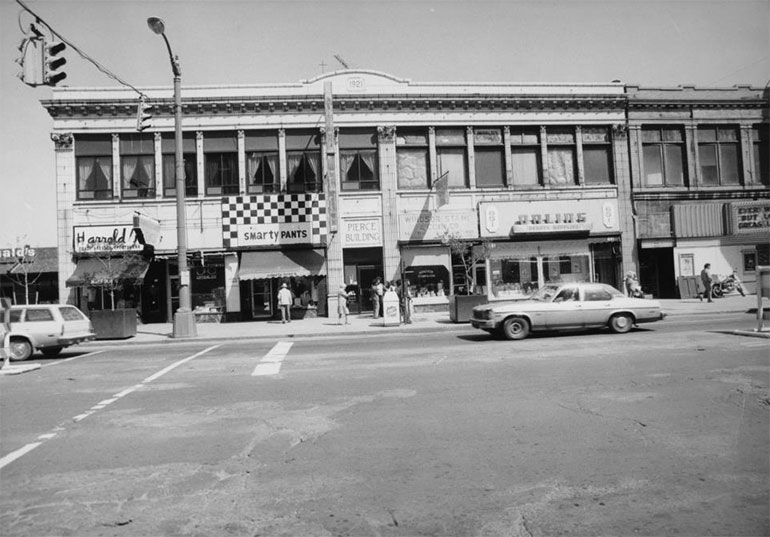
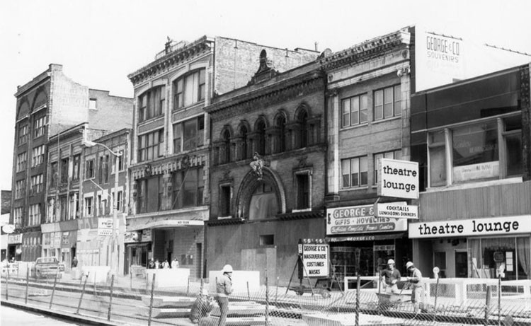

What is the proposed NFTA Metro Expansion/Extension?
Since the completion of the metro rail line along main street in the 1980s, the Niagara Frontier Metro Transit (NFTA) and the Citizens for Regional Transit (CRT) have sought to expand the rail line into more suburban parts of the city in order to connect specific retail and university services in the suburban areas. Rather than seeking a more direct route to the University of Buffalo north campus, NFTA are seeking a cheaper, more round-about alternative to push the metro rail past retail developments, such as the Boulevard Mall Site and the new Station 12 at the corner of Sheridan Dr. and Niagara Falls Blvd, on order to offer transportation to them. This path would swing down Main Street, in front of the University Plaza businesses, turning on Kenmore Avenue, then making a 90 degree turn onto Niagara Falls Blvd, coming above ground shortly after turning onto the Boulevard. Digging would not be approached solely from underground but would be accessed from above ground, digging down to the subway level.
Why should the development and planning be halted?
Unfortunately, in spite of the prospect of an additional transportation option to those areas, other locations will become diminished, particularly the residential zoned areas that this new rail will cut through. This includes the western Eggertsville residential areas, in addition to the Kenilworth residential areas. Creating the tunneling required for a metro rail involves the blasting and excavation of shale, limestone and dolomite rock, as well as some known hazardous material sites, poisoning the surrounding areas which include many single and multi family homes. Also, as the initial 1980s metro rail line development down Main Street showed, existing businesses in the University Plaza area and along the construction path will suffer reduced access during the construction time frame, which due to the nature of the project could be upwards of ten years. Many of these thriving family-run businesses will not survive the construction process and will close. In addition, the Plaza hosts a Movie Theater, Tops Supermarket, Citizens Bank, M&T Bank, Walgreens Drug Store, Houses of Worship, several unique ethnic dining opportunities and more. This, in effect, would be government authorities deciding which businesses would prosper which is of a socioeconomic concern, as the University Plaza typically services the residents of the Kensington and LaSalle areas.
What is the mutually beneficial solution to the desired services?
As residents of those areas that have access to the existing subway line, we find it is seldom used, having outdated operations in disrepair, and call into question the need for expansion. We believe there is not any justification for the proposed expenditures (over 1 billion dollars) that cannot be met with a well-run, efficient, modern bus line that could have the flexibility to support multiple accesses, rather than simply one permanent linear path. It is more environmentally efficient than Light Rail, costs less to build and maintain, and avoids all the negative environmental impacts created by the massive infrastructure requirements of building a light rail system. For our area's population, this would be the logical first step to increase transit throughput and ridership for the entire WNY Community.

Sparsely Used Park and Ride

Outdated ticketing machine technology

Proposed path of subway


Main Street PRIOR to the Metro Rail construction

Main Street Metro Rail Line Construction